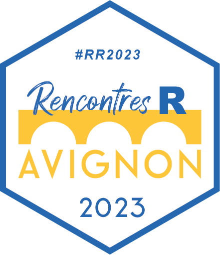
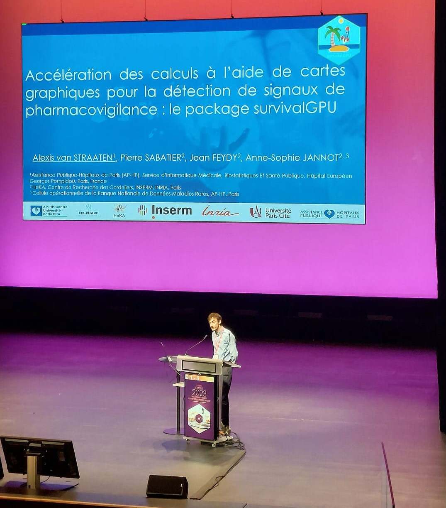

Talks
Congress
Rencontres R 2023 - Avignon

Rencontres R it’s a great conference bringing together the R community, to share projects and discuss the latest news on the language. I presented survivalGPU in order to explain how to carry out survival analyzes with this package.
Slides
YouTube video
Github Repo
EMOIS 2023 - Nancy
EMOIS is a congress focused on epidemiological research. The objective of this presentation was to present for the first time our survivalGPU library, in particular the WCE model on signal detection, with a case study on pharmacovigilance. With the rise of large national medical databases, many researchers have been interested in using GPUs for their research. This presentation gave rise to a publication in the Revue d’Épidémiologie et de Santé Publique (Van Straaten and others 2023).
Slides

Short presentations
- Analyses de survie sur cartes graphiques : survivalGPU
February 2023 - Unité de Recherche Clinique (URC), European Georges Pompidou Hostipal